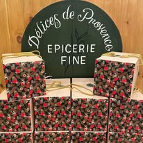
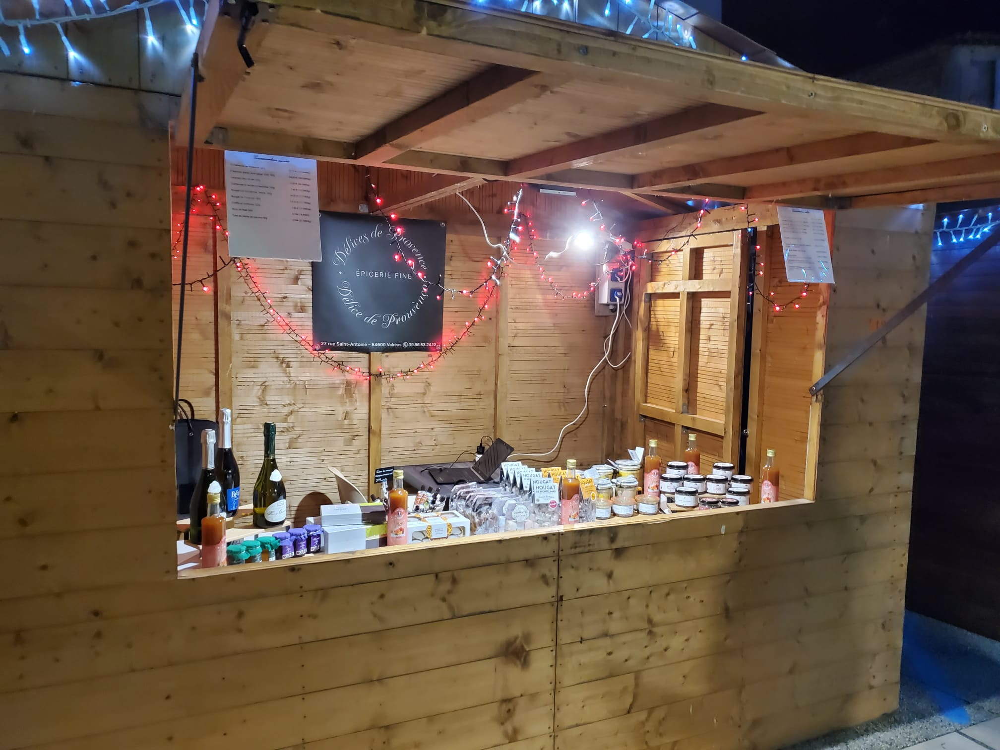

L'histoire
Une épicerie fine au cœur de l'Enclave des Papes,
née d'une passion pour les saveurs authentiques.

Au cœur de Valréas
Délices de Provence est née d'une envie simple : partager les meilleurs produits du terroir provençal avec ceux qui aiment les belles choses. Installée au 27 rue Saint-Antoine à Valréas, au cœur de l'Enclave des Papes, notre épicerie fine est un lieu de découverte et de gourmandise.
Chaque produit présent sur nos étagères a été soigneusement sélectionné, goûté et approuvé. Nous visitons personnellement les producteurs, vérifions leurs méthodes de fabrication et privilégions l'agriculture raisonnée et les circuits courts.
Des produits vrais, sans artifice, qui racontent leur terroir.
Chaque produit est goûté et approuvé avant d'arriver en rayon.
Des producteurs locaux, des circuits courts, une traçabilité totale.
Ce qu'on dit de nous
L'épicerie fine est très bien achalandée : on y trouve un large choix de produits locaux et de belles idées souvenirs. La vendeuse est très accueillante et connaît parfaitement ses produits, ce qui permet d'être très bien conseillée.
Accueil fort chaleureux. Produits très qualitatifs et qui sentent bon la Provence. Passage obligatoire à la boutique si vous passez par Valréas.
Je me suis rendu plusieurs fois aux Délices de Provence. Un accueil chaleureux vous est réservé par Edwige et son mari. Des produits de grande qualité du terroir, producteurs locaux. De quoi régaler vos papilles !
Un territoire d'exception
Valréas est un morceau de Vaucluse entouré par la Drôme — une enclave historique rattachée à la papauté d'Avignon depuis 1317. Ici, entre vignes et lavande, le temps prend un autre rythme. Et dans cette terre de caractère, Délices de Provence a choisi de s'ancrer, au cœur d'une histoire qui a sept siècles d'avance.
